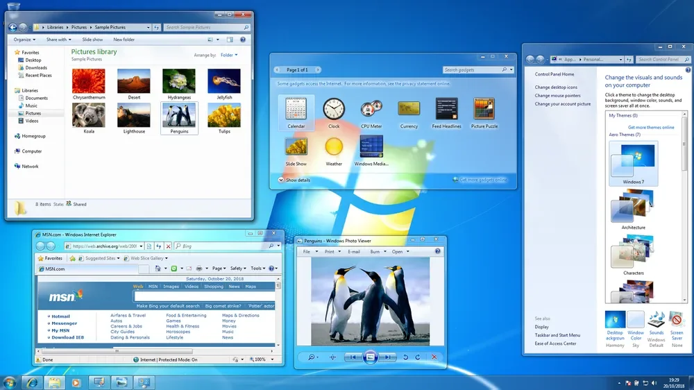
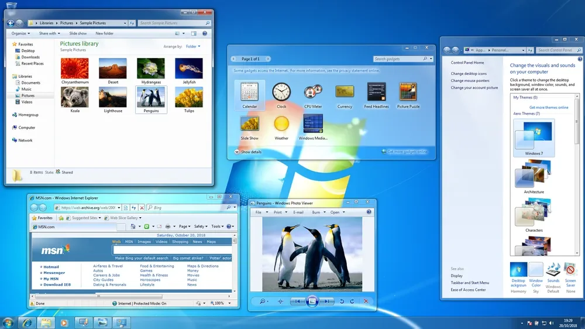

Este website foi desenvolvido por Leonardo Peixoto, como parte da unidade curricular de Design de Interfaces do curso de Desenvolvimento Web e Dispositivos Móveis. O objetivo principal é compilar e apresentar de forma organizada os trabalhos realizados ao longo do semestre, demonstrando a aplicação prática dos conhecimentos adquiridos.
Cada trabalho representa um tema específico abordado nas aulas, desde os princípios fundamentais do design de interfaces até conceitos mais avançados como acessibilidade digital, tendências visuais contemporâneas e a importância dos espaços negativos no design.
O conteúdo está organizado em duas secções principais, acessíveis através do menu lateral:
O design visual deste website foi inspirado na estética Frutiger Aero, um estilo de design popular entre 2004 e 2013, caracterizado por elementos visuais que evocam natureza, tecnologia e modernidade de forma harmoniosa.
Esta escolha estética não é apenas visual, mas também funcional. Características como gradientes suaves, efeitos de vidro translúcido (glassmorphism), reflexos subtis e uma paleta de cores que combina tons naturais com acentos tecnológicos criam uma experiência visual única que demonstra princípios de design de interfaces na prática.
Elementos como o backdrop blur, as sombras internas que criam profundidade, e a utilização estratégica de espaços negativos refletem diretamente os conceitos estudados nos trabalhos apresentados, tornando este website uma demonstração viva dos princípios de design de interfaces.
 
